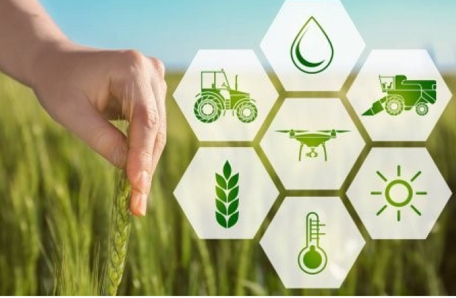

coleta
Através de sensores instalados pelo campo
conseguimos ter uma dimensão real e exata do
que esta acontecendo na plantação, dados são
coletatos atravé do Arduino.

análise
A análise é realizada por meio de um sistema
inteligente de algoritimos onde nossa equipe
analisa os dados coletatos de forma coesa e
rápida.

monitoramento
Após uma analise detalhada dos dados obtidos o
sistema irá indicar recomendações para o
produtor de acordo com o contexto de sua
plantação com o intuito de uma melhor tomada
de decisões e planejamento de sua produção.